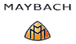
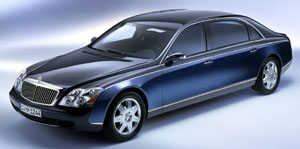

|
DaimlerChrysler
Group, dünyanýn en prestijli otomobili olarak kabul edilen
800 bin dolarlýk (1,3 trilyon lira) "Maybach"ta kullanacaðý
kauçuk-metal titreþim kontrol elemanlarý için, Bursa'da faaliyet
gösteren Beltan Firmasý'nýn ürününü tercih etti.
"Maybach"ýn,
yoldan gelen titreþim ve sesleri en aza indiren kauçuk-metal
titreþim kontrol elemanlarýný üreten Beltan'ýn Genel Müdürü
Halil Akgül, yaptýðý açýklamada, böyle prestijli bir otomobile
yedek parça üretmenin mutluluðunu ve gururunu yaþadýklarýný
söyledi.
Akgül,
"DaimlerChrysler'in görevlileri fabrikamýza gelip, incelemelerde
bulundular. Bütün üretim sürecini kontrolden geçirdiler ve
fabrikanýn yeterliliðini yerinde gözlediler. Bunun yaný sýra,
parçanýn özel bir anlamý olduðu için, garanti þartlarýný da
imzalamamýz gerekiyordu. Bütün bu süreç, çok sýký bir denetim
ve kontrolü kapsýyor. Bir firmanýn DaimlerChrysler ile anlaþma
yapabilmesi için, denetimlerde 100 üzerinden 95 almasý gerekiyor.
Biz, bunu baþardýk. Ama bu sadece bizim deðil, Türk otomotiv
yan sanayiinin bir baþarýsýdýr." dedi.
Akgül,
yapýlan anlaþma doðrultusunda, bu yýlýn baþýnda çalýþmalara
baþladýklarýný ve haziran ayýndan itibaren "Maybach" için
kauçuk-metal titreþim kontrol elemanlarýný üretmeye baþladýklarýný
dile getirerek, bugüne kadar yaklaþýk 300 bin adetlik ihracat
gerçekleþtirdiklerini bildirdi. Porsche, Lamborghini, Volvo,
Audi ve Mercedes gibi markalara da yedek parça üretimi yaptýklarýný
anlatan Akgül, bu firmalara, deðiþik titreþim kontrol elemanlarý,
motor takozlarý ve dinamik sönümleyiciler ihraç ettiklerini
kaydetti. Akgül, Japonya'ya yedek parça ihracatýnda bulunmak
amacýyla çalýþmalarýn sürdüðünü kaydetti.
Zenginlik
simgesi:
Gottlieb
Daimler ile birlikte 1899 yýlýnda otomobil üretmeyi baþaran
Wilhelm Maybach'ýn ölümünün ardýndan, oðlu Karl Maybach, 1929
yýlýnda "Maybach" adýný taþýyan ilk lüks otomobili üretti.
Bantlarda kaldýðý 12 yýl boyunca bin 800 adet üretilen "Maybach",
o dönemde statü ve zenginliðin simgesi olarak kabul edildi.
DaimlerChrysler Group tarafýndan üretilen ve "Maybach" adý
verilen ultra lüks otomobilin de, saðladýðý üstün konfor,
performans ve güvenlik unsurlarýyla, selefini aratmayacaðýna
kesin gözüyle bakýlýyor. Üretiminde en küçük detaylara bile
son derece dikkat gösterilen ve çok kaliteli parçalar kullanýlan
"Maybach"ta, 5,5 litre hacimli ve çift turbo beslemeli V12
motor görev yapýyor.
Ýlgili Linkler:
|